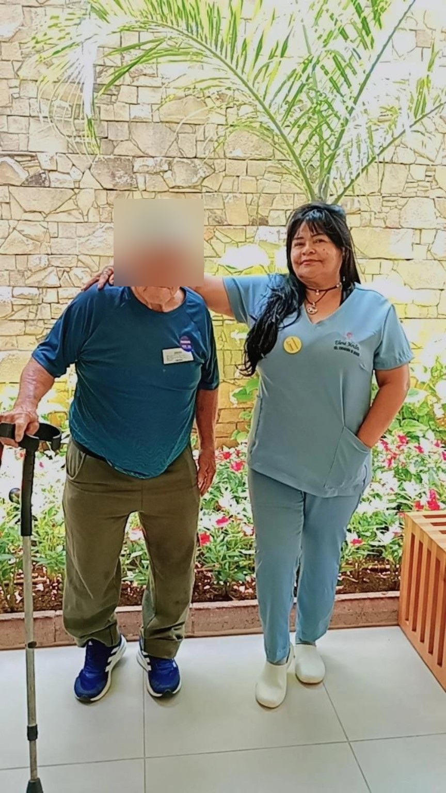
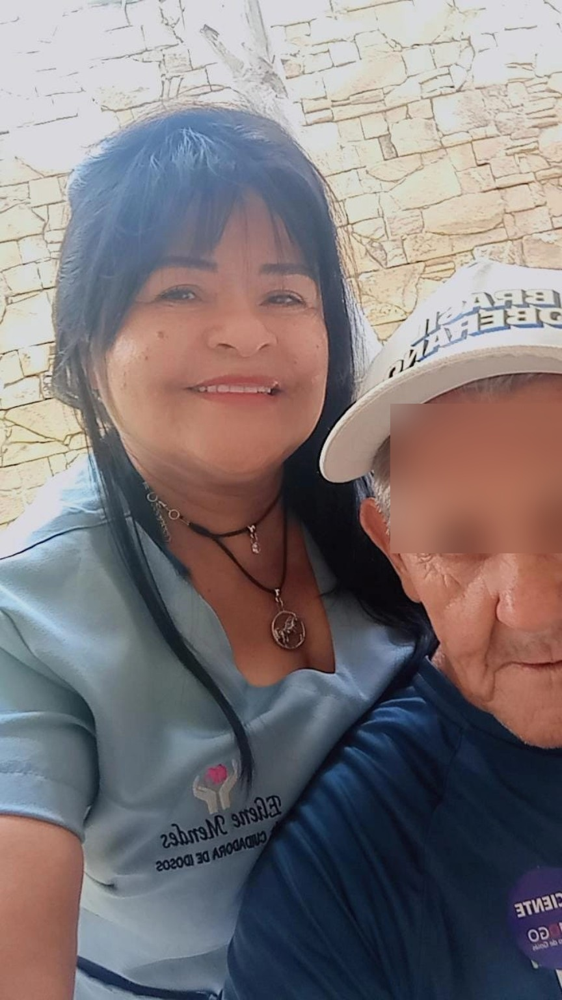

Atuação atual
Home Care Lúcelia
Luziânia/GO
● ATIVO
Luziânia/GO
● ATIVO
UPA 2 Luziânia
Auxiliar de Farmácia
● ATIVO
Auxiliar de Farmácia
● ATIVO
Técnica de Enfermagem
SENAC • COREN ativo
SENAC • COREN ativo
Cuidadora de Idosos
SENAC
SENAC
Sobre mim
Sou profissional da área de cuidados, com formação como Técnica de Enfermagem e Cuidadora de Idosos. Minha atuação inclui atendimento, acompanhamento e assistência, sempre buscando oferecer cuidado responsável, atenção e respeito ao paciente.
Disponibilidade: qualquer horário.
Formação
- Técnico em Enfermagem — SENAC, 2023 — COREN 002.067.151
- Cuidadora de Idoso — SENAC, 2013
- Informática Básica — SENAC, 2018
- Ensino Médio Completo — 1993
Experiência profissional
- Home Care Lúcelia — Luziânia/GO — atual.
- UPA 2 Luziânia — Auxiliar de Farmácia — atual.
- Particular — Valparaíso/GO — Cuidadora de Idoso / Técnica de Enfermagem — 2023/2024.
- Empresa Padrão Enfermagem — Brasília/DF — Cuidadora de Idoso — 2013.
- Particular — Luziânia/GO — Cuidadora de Idoso — 2013/2014.
Competências
Administração de medicamentos
Monitoramento de sinais vitais
Higiene, alimentação e mobilização
Assistência em procedimentos médicos
Coleta de amostras para exames
Orientação a pacientes e familiares
Documentação e controle de estoque
Suporte em emergências
Áreas de formação
Pediatria, geriatria, saúde mental, UTI, oncologia, enfermagem cirúrgica, obstétrica, cuidados paliativos, emergência e enfermagem comunitária.
Registro de experiência


As imagens foram tratadas para preservar a identidade das pessoas fotografadas.
Currículo completo
Veja ou baixe a versão profissional atualizada do currículo.
Abrir currículo em PDFContato
(61) 98250-7241
Luziânia — GO